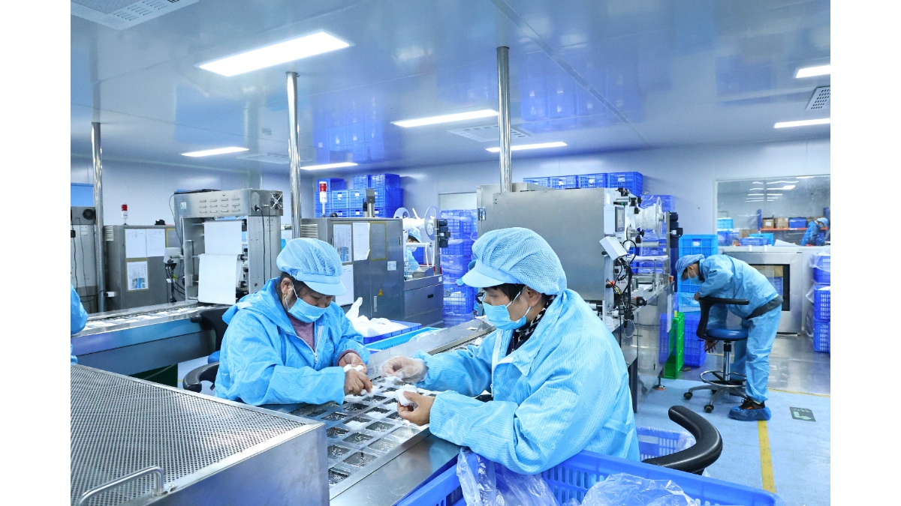

Beyond the Price Tag: Why High-Compliance B2B Sourcing is 100% About Trust
MAY 28, 2026

Many professional purchasing managers think international procurement is just about comparing FOB prices and filtering first aid kit factories. But in the medical and safety supply chain, a cheap quote is often the most expensive mistake.
When international medical supply wholesalers and PPE contract distributors choose a manufacturing partner, they aren’t just buying physical boxes—they are investing in long-term supply chain trust.
At GoSafeMed (www.gosafemed.com), we have seen that price can win a temporary inquiry, but only absolute trust can secure a multi-year institutional safety contract. Our global distributors choose to stay with us not because we chase the lowest bidding wars, but because we deliver on these four non-negotiable supply chain promises:
1. Regulatory Compliance without Compromise
In the global medical devices sector, local regulatory checks and customs clearance can make or break your business. Our clients trust us to manage sterile medical consumables and workplace first aid supplies that pass inspection every single time.
For instance, we engineered our emergency kits to be 100% climate-resilient, backed by verified TÜV SÜD test reports. Our custom medical packaging undergoes strict 55°C environmental chamber testing to successfully simulate five full years of tropical warehouse storage. This maintains a 99.6%+ bacterial barrier with zero micro-leaks, ensuring your inventory never degrades or loses legal compliance before expiry.
2. True Volumetric Optimization (The DIN 13164:2022 Case Study)
When importing first aid kits, shipping air is shipping your profit margins away. High ocean freight can instantly destroy a distributor’s competitive edge.
As an experienced first aid kit manufacturer, we proactively design for cost-reduction. In a recent project for the European automotive safety market, we optimized our mandated DIN 13164:2022 Car First Aid Kits. Instead of standard packing, we vacuum-compressed the internal textile components and redesigned the container layout. This unique volumetric engineering allowed our client to fit significantly more kits into a single shipping container, slashed their hidden logistics costs per unit, and protected their wholesale margins.
3. Total Accountability When Logistics Go Wrong
Global supply chains are unpredictable. Port congestion, shipping delays, and customs bottlenecks happen. When a crisis strikes, the biggest risk is a supplier who goes silent, pushes the blame, or hides behind automated emails.
We protect our clients’ supply chain continuity as our own. If a shipping delay occurs, our team stays up late, works directly with top-tier carriers, and provides transparent, real-time tracking alongside alternative routing solutions. We don't make excuses; we deliver peace of mind.
4. Absolute Consistency on the Factory Floor
What you see on our manufacturing floor is exactly what you get in your warehouse. As shown in our actual GoSafeMed production facility photos, every tactical IFAK refill pack, trauma bandage, and medical component is handled with strict hygiene, ISO-compliant quality control, and industrial precision. Our distribution partners know that the quality of the 10,000th production batch will be 100% identical to the very first golden sample they approved.
In the first aid and safety industry, a cheaper alternative might save you a few cents today, but a trusted partner saves your business reputation, your corporate safety tenders, and your bottom line tomorrow.
If you are looking for a reliable, high-compliance first aid kit manufacturer to secure your next safety contract, explore our tailored solutions at www.gosafemed.com or share your component specifications with our engineering team.